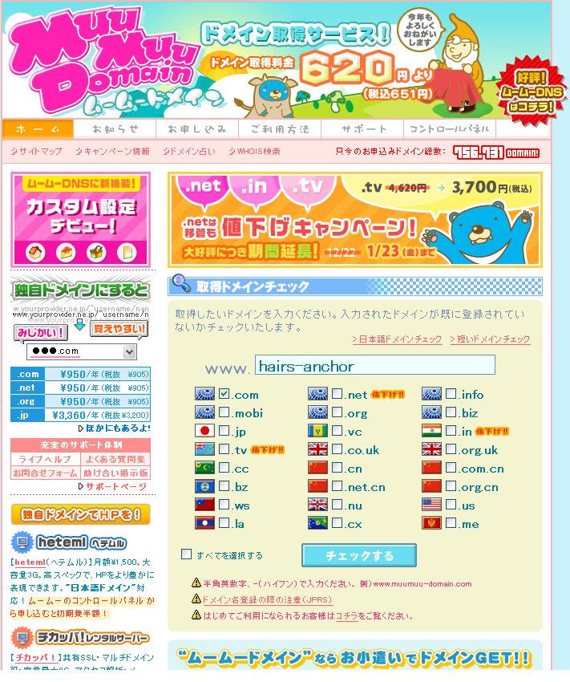
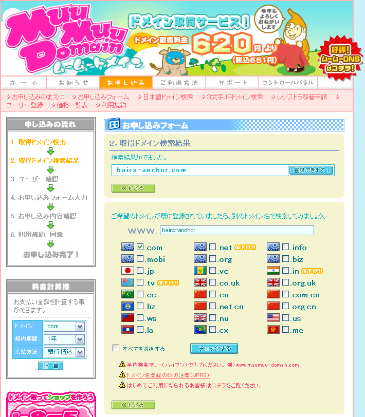
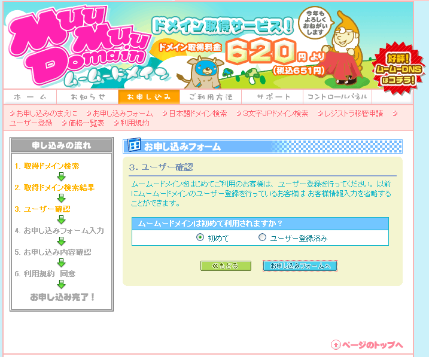
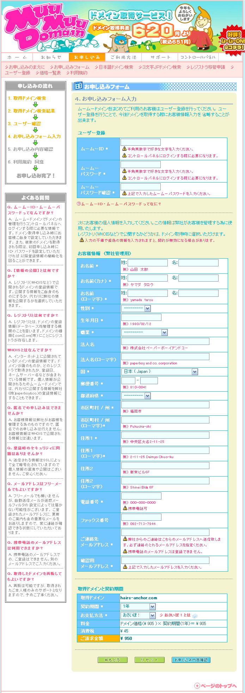

STEP 1
1.ムームードメインにアクセスします。
2.「hairs-anchor」と入力して、「.com」だけチェックして「チェックする」ボタンを押します。

STEP 2
1.検索結果に「登録できます！」ボタンがあれば、そのままそのボタンを押して登録します。

STEP 3
1.「初めて」を選択して「お申し込みフォームへ」ボタンを押します。

STEP 4
1.各項目を入力して「お申し込み確認画面」ボタンを押します。

STEP 5
1.登録内容に問題がなければ、そのまま申し込んでください。
以上！お疲れ様でした！